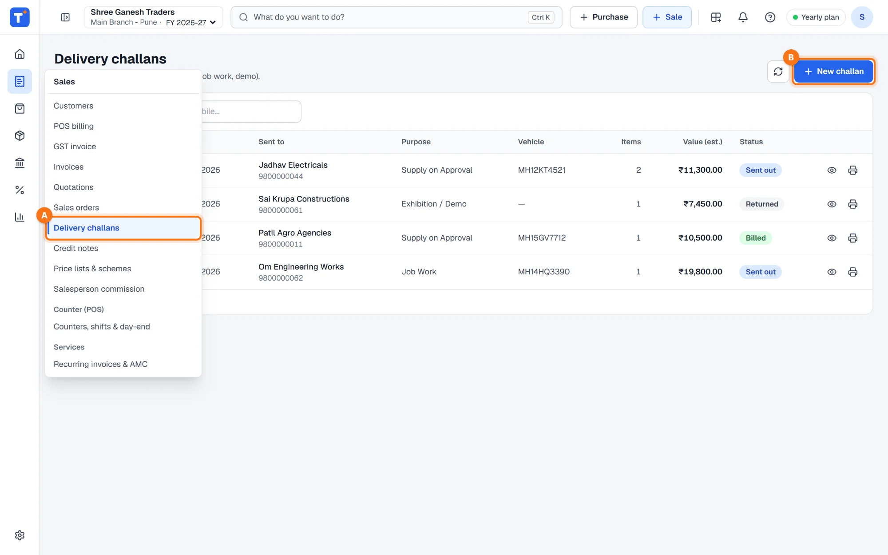
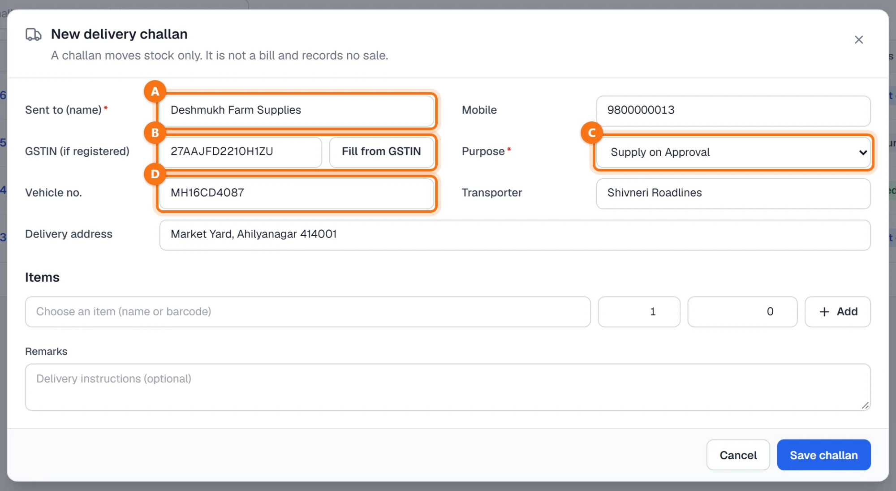
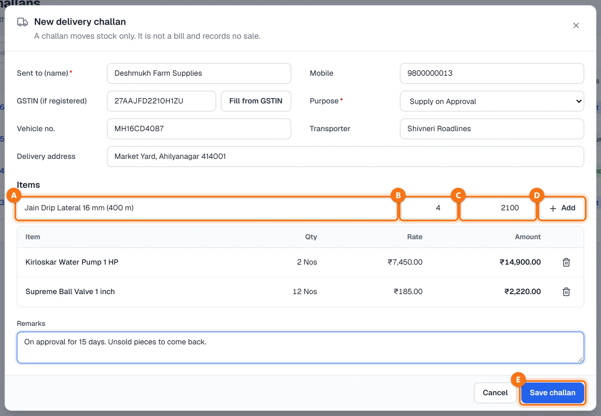
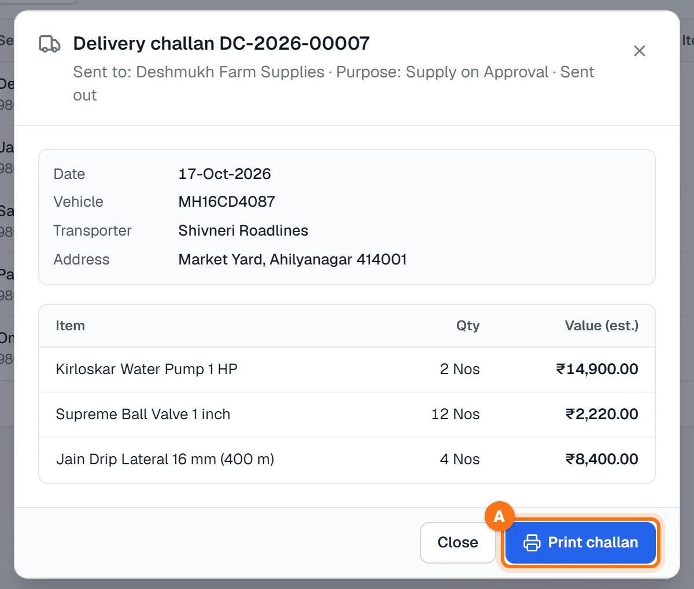
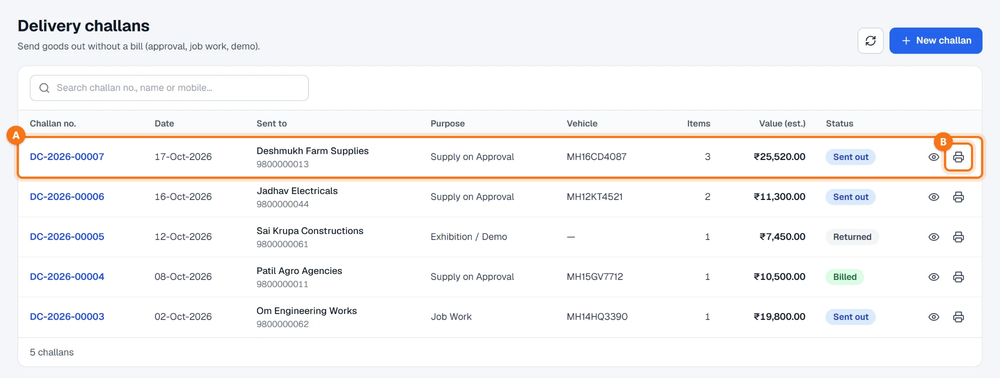

Techstar ERP मराठी आणि हिंदीतही वापरता येतो. वर उजवीकडे तुमच्या नावाच्या आद्याक्षराच्या गोल बटणावर click करा → Language (भाषा) → मराठी. ERP चा menu मराठीत दिसतो (उदा. Sales = विक्री). बिले आणि इतर कायदेशीर कागदपत्रे नेहमीप्रमाणेच छापली जातात. या guide मधले screenshots English menu चे आहेत.
सुरू करण्यापूर्वी
अजून विक्री झालेली नसेल तेव्हाच चलन वापरा. विकलेल्या मालासाठी GST इनव्हॉइस करा, किंवा सेल्स ऑर्डरवरून डिलिव्हरी नोट — पहा सेल्स ऑर्डर आणि डिलिव्हरी.
माल item master मध्ये असावा (Items & stock → Items). चलनाला भविष्यातील तारीख किंवा lock केलेल्या हिशोब कालावधीतील तारीख देता येत नाही.
Sales → Delivery challans उघडा
डाव्या menu मध्ये Sales → Delivery challans A वर click करा (मराठी menu मध्ये: विक्री → डिलिव्हरी चलन). या स्क्रीनवर menu फक्त icons चा असतो; Sales च्या icon वर माउस नेला की त्यातल्या स्क्रीन दिसतात. मग New challan B वर click करा.

कोणाला, कशासाठी आणि वाहतूक
- Sent to (name) A: माल घेणारा ग्राहक किंवा पार्टी (आवश्यक). Mobile ऐच्छिक, 10 अंकी.
- GSTIN (if registered) B: सगळी 15 अक्षरे टाइप केली की Fill from GSTIN दिसते आणि GSTIN वरून पार्टीचे नाव भरते (live lookup, चार्ज तुमच्या wallet मधून).
- Purpose C: Supply on Approval, Job Work, Exhibition / Demo, Consignment किंवा Other. हे चलनावर छापले जाते.
- Vehicle no. D, Transporter आणि Delivery address — माल कुठे आणि कसा जातो.

आयटम टाका
Items मध्ये: नाव किंवा बारकोडने आयटम A निवडा (यादीत हातातला स्टॉक दिसतो), Qty B टाका आणि दर C तपासा — तो आयटमच्या विक्री दराने सुरू होतो आणि चलनावर छापली जाणारी अंदाजे किंमत देतो. Add D वर click करा; ओळ खालच्या टेबलमध्ये येते, तिथे बिनच्या icon ने काढता येते.
पुढचा आयटम असाच टाका. Remarks मध्ये डिलिव्हरीच्या सूचना लिहा — उदा. माल किती दिवस approval वर आहे. मग Save challan E वर click करा.

Save आणि प्रिंट
चलनाला नंबर मिळतो (उदा. DC-2026-00007) आणि माल स्टॉकमधून बाहेर जातो. चलन उघडण्यासाठी त्याच्या नंबरवर click करा: तारीख, गाडी, transporter, पत्ता आणि आयटम त्यांच्या अंदाजे किमतीसह. Print challan A वर click करा.

प्रिंटच्या वर DELIVERY CHALLAN — Issued under Rule 55 of CGST Rules, 2017 – Not a Tax Invoice असे लिहिलेले असते. त्यात purpose, चलन नंबर व तारीख, गाडी आणि transporter, माल घेणाऱ्याचे नाव, मोबाईल, GSTIN व पत्ता, प्रत्येक आयटम त्याच्या HSN, नग, अंदाजे दर व किमतीसह, मालाची एकूण किंमत, तुमचे remarks, आणि माल घेणाऱ्याची सही-शिक्का व authorised signatory साठी जागा असते.
चलनांची यादी
नवीन चलन सगळ्यात वर A असते. प्रत्येक चलनाचा नंबर, तारीख, कोणाला पाठवले, purpose, गाडी, आयटमची संख्या, अंदाजे किंमत आणि status दिसतो — Sent out, Billed, Returned किंवा Cancelled. चलन नंबर, नाव किंवा मोबाईलने शोधा. डोळ्याचे icon चलन उघडते आणि प्रिंटरचे icon B ते पुन्हा प्रिंट करते.

नेहमीचे प्रश्न
डिलिव्हरी चलनाने विक्री किंवा GST नोंदवला जातो का?
चलन save केल्यावर स्टॉक कमी होतो का?
चलने GST रिटर्नमध्ये येतात का?
डिलिव्हरी नोटपेक्षा हे वेगळे कसे?
आणखी guides
Screenshots Techstar ERP मधील demo कंपनीचे आहेत (Shree Ganesh Traders, Pune). सर्व नावे, GSTIN, रकमा आणि कागदपत्रांचे नंबर नमुना माहिती आहेत.